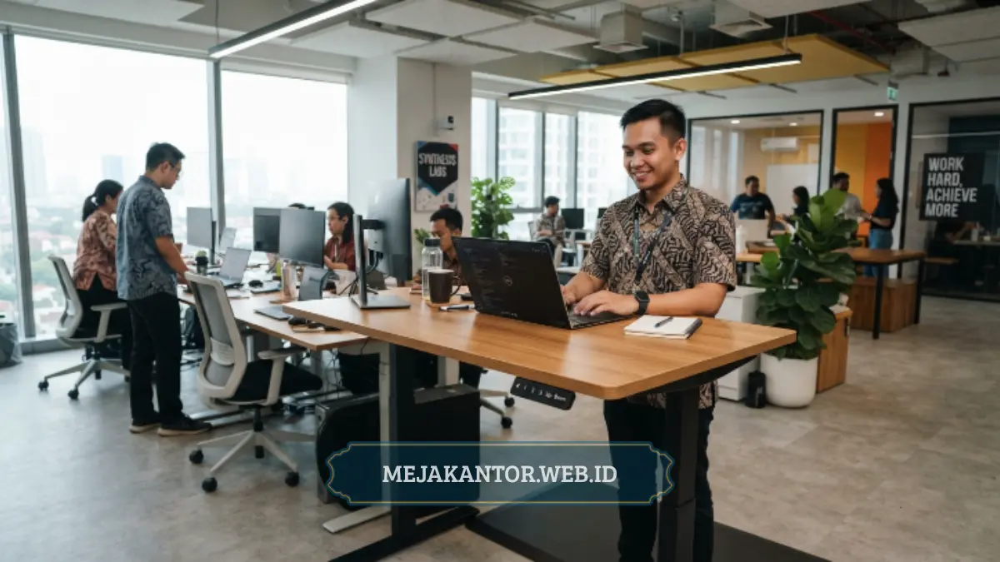

Macam-macam meja kantor modern terdiri dari meja minimalis, meja eksekutif, meja L-shape, standing desk, dan meja kolaboratif. Masing-masing model dirancang secara khusus untuk memenuhi kebutuhan ruang serta gaya kerja yang beragam di era modern.
Setiap jenis furnitur memiliki keunggulan tersendiri dari sisi fungsi, daya tahan material, dan estetika visual. Memilih meja yang tepat akan meningkatkan produktivitas tim sekaligus memperkuat citra profesional perusahaan di mata klien.
- Meja kantor modern hadir dalam lima kategori utama: minimalis, eksekutif, L-shape, standing desk, dan kolaboratif.
- Pemilihan jenis meja sebaiknya disesuaikan dengan luas ruangan, jumlah staf, dan gaya kerja tim.
- Material populer meliputi kayu solid, particle board finishing HPL, dan kombinasi metal-kayu untuk daya tahan tinggi.
- Desain modern menekankan efisiensi ruang, kabel management, dan estetika minimalis yang rapi.
- Mejakantor.web.id menyediakan berbagai pilihan meja kantor modern dengan opsi kustomisasi sesuai identitas brand perusahaan Anda.
Kebutuhan ruang kerja yang terus berkembang membuat perusahaan kini semakin selektif saat memilih furnitur kantor. Meja bukan lagi sekadar tempat meletakkan laptop dan berkas dokumen kerja harian karyawan.
Furnitur ini telah menjadi elemen krusial yang menentukan kenyamanan postur, kecepatan kerja, hingga kesan pertama bagi tamu kantor. Menata ruang dengan meja yang proporsional akan menghadirkan atmosfer kerja yang jauh lebih kondusif.
Artikel ini mengulas secara menyeluruh ragam meja kantor modern terpopuler di Indonesia beserta rekomendasi penerapannya. Panduan ini dirancang untuk memudahkan manajemen dalam menentukan pilihan furnitur terbaik.
Daftar Isi Artikel
- Apa Saja Jenis-Jenis Meja Kantor Modern yang Populer Saat Ini?
- Mengapa Standing Desk Semakin Diminati di Kantor Modern?
- Bagaimana Meja Kolaboratif Mendukung Produktivitas Tim?
- Faktor Apa Saja yang Perlu Dipertimbangkan Saat Memilih Meja Kantor Modern?
- Apa Kesalahan Umum yang Sering Terjadi Saat Membeli Meja Kantor?
- Tips Memilih Material Meja Kantor Modern yang Tepat
- Solusi Pengadaan Meja Kantor Modern Terbaik
Apa Saja Jenis-Jenis Meja Kantor Modern yang Populer Saat Ini?
Jenis meja kantor modern yang paling banyak diminati meliputi meja minimalis, meja eksekutif, meja L-shape, standing desk, dan meja kolaboratif. Kelima varian ini diciptakan untuk menjawab kebutuhan operasional kantor yang bervariasi.
Mulai dari tuntutan efisiensi luasan ruang terbuka hingga kebutuhan representasi status jabatan pimpinan, setiap model menawarkan solusi spesifik. Penggabungan beberapa tipe meja dalam satu kantor kini menjadi tren tata ruang yang efektif.
Meja Kantor Minimalis
Meja kantor minimalis dirancang dengan garis sederhana, profil ramping, dan tanpa ornamen berlebihan sehingga sangat cocok untuk ruangan terbatas. Model ini banyak diminati perusahaan rintisan maupun kantor berkonsep open space fleksibel.
Pilihan warna netral seperti putih, abu-abu muda, dan natural oak menjadi favorit karena sangat mudah dipadukan dengan berbagai tema interior. Keunggulan meja minimalis terletak pada fleksibilitas susunan formasi kerja tim.
Meja jenis ini dapat dirangkai berjajar untuk divisi besar atau digunakan terpisah sebagai workstation privat yang efisien. Harganya yang ekonomis menjadikannya pilihan strategis bagi pengadaan furnitur dalam volume besar.
Meja Kantor Eksekutif
Meja eksekutif umumnya memiliki dimensi lebih besar dengan tampilan mewah berbahan kayu solid atau veneer premium berkualitas tinggi. Furnitur ini biasa ditempatkan di ruang pimpinan, direktur, maupun area pertemuan penting manajemen korporasi.
Kesan berwibawa yang terpancar dari meja eksekutif secara langsung mencerminkan kredibilitas institusi di hadapan tamu penting dan mitra bisnis. Meja ini juga menyediakan ruang kerja luas untuk perangkat ganda dan dokumen kerja.
Selain nilai prestisius, meja eksekutif modern dilengkapi laci penyimpanan berkunci, grommet kabel terintegrasi, dan lapisan anti gores. Perpaduan fungsi praktis dan desain megah menjadikannya investasi jangka panjang yang bernilai tinggi.
Meja Kantor L-Shape
Meja L-shape memberikan bentang permukaan kerja yang lapang dalam satu konfigurasi modular terpadu. Model ini sangat ideal bagi profesional yang membutuhkan multitasking intensif, seperti staf finance, programmer, arsitek, maupun project manager.
Konfigurasi sudut memungkinkan pengguna memisahkan zona komputer aktif dengan zona berkas fisik tanpa harus berpindah kursi. Hal ini menciptakan alur kerja yang rapi dan meminimalkan kekacauan di atas meja kerja.
Penempatan meja L-shape juga sangat efektif dalam memanfaatkan area sudut ruangan yang kerap terbengkalai. Dengan layout yang pas, sudut kerja terasa lebih privat, luas, dan terorganisir dengan rapi.

Mengapa Standing Desk Semakin Diminati di Kantor Modern?
Standing desk semakin diminati karena efektif menjaga kesehatan postur tubuh karyawan yang terbiasa bekerja di depan layar monitor berjam-jam. Langkah ini juga memperlihatkan komitmen perusahaan terhadap standar kenyamanan dan kesejahteraan staf kerja.
Riset ergonomi membuktikan bahwa duduk terlalu lama meningkatkan risiko ketegangan leher dan masalah tulang belakang. Oleh sebab itu, furnitur fleksibel yang dapat diatur ketinggiannya menjadi standar baru ruang kantor modern.
Standing desk masa kini didukung sistem motor elektrik presisi yang mampu menyesuaikan tinggi permukaan secara halus dalam hitungan detik. Fitur memori ketinggian digital juga memudahkan pergantian pengguna pada sistem kerja hot desking.
Bagaimana Meja Kolaboratif Mendukung Produktivitas Tim?
Meja kolaboratif mengusung bentang permukaan luas berbentuk persegi panjang maupun kurva melingkar untuk memfasilitasi koordinasi langsung. Meja ini menjadi sarana utama pada area brainstorming, ruang meeting santai, dan ruang kerja tim kreatif.
Berbeda dengan sekat individual yang tertutup, meja kolaboratif meniadakan pembatas visual sehingga percakapan kerja berlangsung lebih cair. Karyawan dapat saling bertukar ide dan data proyek secara cepat tanpa hambatan fisik.
Model terkini meja kolaboratif juga dilengkapi modul colokan listrik, soket USB tersembunyi, dan lubang kabel rapi. Fasilitas terintegrasi ini memungkinkan seluruh anggota tim mengisi daya laptop dan gawai bersamaan tanpa kabel berantakan.
Faktor Apa Saja yang Perlu Dipertimbangkan Saat Memilih Meja Kantor Modern?
Faktor utama dalam memilih meja kantor modern meliputi ketersediaan luas ruangan, kuantitas pengguna, sifat pekerjaan harian, spesifikasi material, dan plafon anggaran. Keseluruhan aspek ini wajib dievaluasi bersama agar pembelian furnitur tepat sasaran.
Ruangan berukuran kompak lebih cocok menggunakan meja minimalis ramping atau meja lipat modular yang hemat tempat. Sementara itu, ruang manajerial yang lega dapat menampung meja eksekutif berdimensi besar dengan fitur penyimpanan lengkap.
Intensitas aktivitas tim juga menentukan pilihan antara workstation mandiri atau meja kolaboratif komunal. Memetakan kebutuhan riil sejak awal menjamin alokasi biaya pengadaan furnitur kantor berjalan secara efisien.
Apa Kesalahan Umum yang Sering Terjadi Saat Membeli Meja Kantor?
Kesalahan umum yang sering ditemui adalah membeli furnitur tanpa mengukur dimensi denah ruangan secara rinci terlebih dahulu. Akibatnya, alur sirkulasi karyawan menjadi sempit dan tata ruang kantor terasa sesak serta kurang nyaman.
Kesalahan lainnya adalah mengabaikan standar ergonomi dan hanya tergiur oleh tawaran harga murah tanpa meneliti mutu bahan. Meja berkualitas rendah umumnya cepat goyang, melengkung, dan membutuhkan peremajaan dalam waktu singkat.
Selain itu, banyak pengadaan yang melupakan fitur manajemen kabel, padahal perangkat elektronik modern memerlukan jalur kelistrikan rapi. Meja tanpa cable tray akan memicu kekacauan kabel yang merusak pemandangan ruang kerja.
Tips Memilih Material Meja Kantor Modern yang Tepat
Material meja modern yang banyak beredar di pasaran meliputi kayu solid alami, particle board berlapis HPL, MDF premium, serta kombinasi besi metal. Setiap varian material menyajikan karakteristik ketahanan dan kisaran harga yang berbeda.
Kayu solid menawarkan keindahan serat alami dan kekuatan superior, sangat pas untuk ruang pimpinan dengan anggaran premium. Sedangkan particle board atau MDF berpelapis HPL menjadi alternatif ekonomis favorit karena tahan gores dan mudah dibersihkan.
Perpaduan rangka kaki metal hollow berfinishing powder coating dengan papan atas kayu kini kian populer di berbagai kantor kreatif. Kombinasi ini memberikan stabilitas kokoh sekaligus menghadirkan estetika industrial kontemporer yang menawan.
Solusi Pengadaan Meja Kantor Modern Terbaik
Memilih meja kantor modern yang tepat membutuhkan evaluasi matang antara fungsi kerja, luasan area, material, dan ketersediaan anggaran. Meja minimalis menghemat ruang, meja eksekutif menonjolkan wibawa, L-shape memaksimalkan sudut, standing desk menjaga postur, dan meja kolaboratif memperkuat sinergi tim.
Dengan perencanaan furnitur yang tepat, kantor Anda tidak hanya tampil profesional namun juga mampu mendongkrak semangat kerja harian. Investasi furnitur berkualitas adalah langkah awal menuju operasional bisnis yang lebih produktif.
Jika Anda sedang merencanakan pengadaan meja kantor modern berkualitas tinggi, tim Mejakantor.web.id siap memberikan solusi terbaik. Hubungi kami melalui mejakantor.web.id untuk konsultasi layout dan perolehan penawaran harga menarik.

Tim Desain & Mega Anggun
Spesialis Tata Ruang & Furnitur Kantor B2B. Berpengalaman dalam merancang interior ergonomis dan memilih konfigurasi meja kerja modern untuk korporasi di Indonesia.